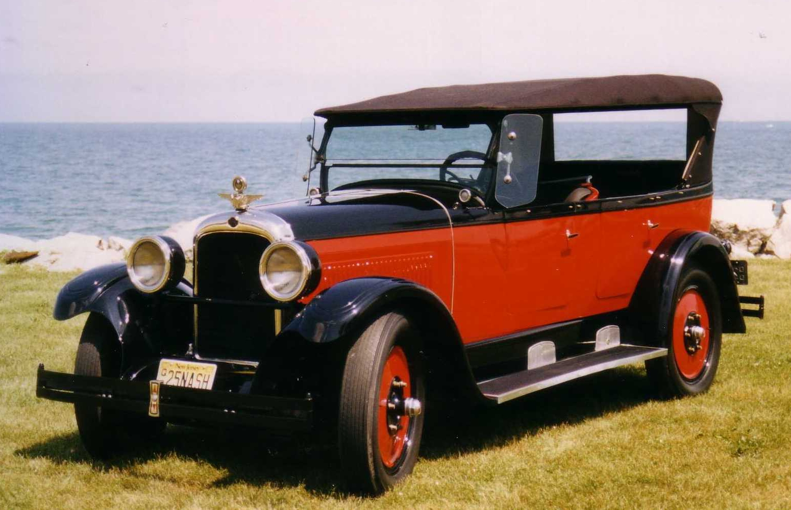

Few inventions have had as great an impact on the world as the automobile. The first Canadian automobile, built in 1867 by Henry Seth Taylor, was regarded as a novelty, as were the single-cylinder vehicles that were imported from the US in 1898. In 1904 Canada's automotive industry began with the establishment of Ford Motor Company of Canada, Ltd. By 1913 there were some 50 000 motor vehicles in Canada; between 1918 and 1923, Canada became the world's second largest vehicle producer and a major exporter of automobiles and auto parts. Today, Canada is the eighth largest auto producer in the world and the third largest exporter, after Japan and the US. More than 80% of Canadian-made cars are exported. The automotive industry is the largest manufacturing sector in Canada, representing 12 % of manufacturing GDP and 24 % of manufacturing trade. Canada's annual exports of automobiles and auto parts exceed $65 billion and $30 billion respectively. With one of the world's highest ratios of automobiles to inhabitants, Canada is often regarded as automobile-dependent. Canada has more than 33 million people and more than 18 million registered automobiles, of which more than 75% are private cars.
The early history of the automobile can be divided into a number of eras, based on the prevalent means of propulsion. Later periods were defined by trends in exterior styling, size, and utility preferences.
In 1870 Siegfried Marcus built the first gasoline powered combustion engine, which he placed on a pushcart, building four progressively more sophisticated combustion-engine cars over a 10-to-15-year span that influenced later cars. Marcus created the two-cycle combustion engine.
Early automobiles were used by the wealthy for racing and amusement. Although these vehicles had engines, they truly were "horseless carriages" - little more than lightweight buggies with motive power. They were unreliable, expensive and sometimes dangerous. The earliest automobiles were hand-made and sometimes built to order. Ransom Olds conceived the idea of interchangeable components, which made assembly-line production possible. By thus reducing costs, the automobile was made available to many customers for whom the price had previously been too high
